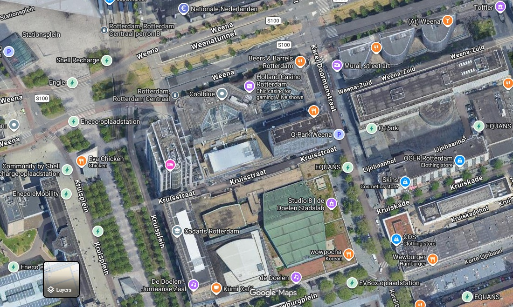

CASE-01 / REF-SCHOUWBURGPL
Schouwburgplein
Rotterdam

aerial / satellite view
schouwburgplein
Historical Description
No archival record found.
Field Observations / Key Reviews
- West8is an urban planning andlandscapearchitecture firm founded by Adriaan Geuze and Paul van Beek
- inRotterdam, Netherlands in 1987.
- It is known for its contemporary designs and innovative solutions
- to urban planning problems[1] using lighting, metal structures, and color.
- PublicsquareSchouwburgpleinRotterdam(NL).The square is designed as an interactivepublicspace,